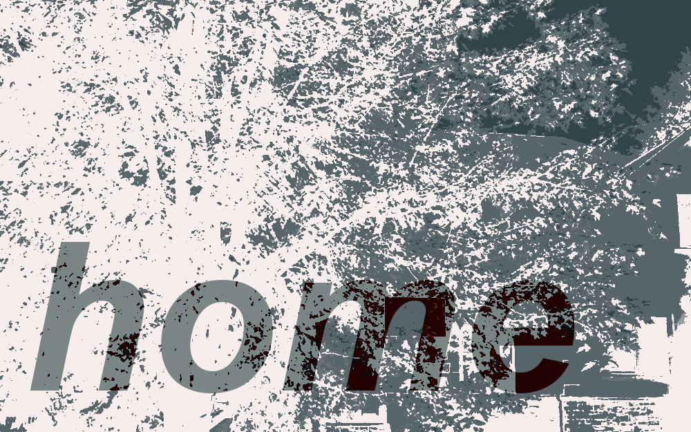

interactive fiction and games
annota line
cyberpunk visual novel about a train heist against the gods.
home
microfiction about lostness, adolescence, and new jersey.
an empty house
first-person horror-shooter about a never-ending nightmare.

gaia's brewery
isometric potion management simulator about heritage and identity.
apparition apparatuses
a meditation on hauntings, bureacracy, and resignation.